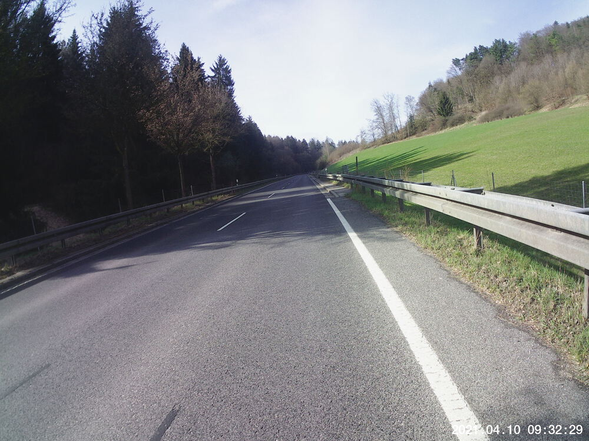
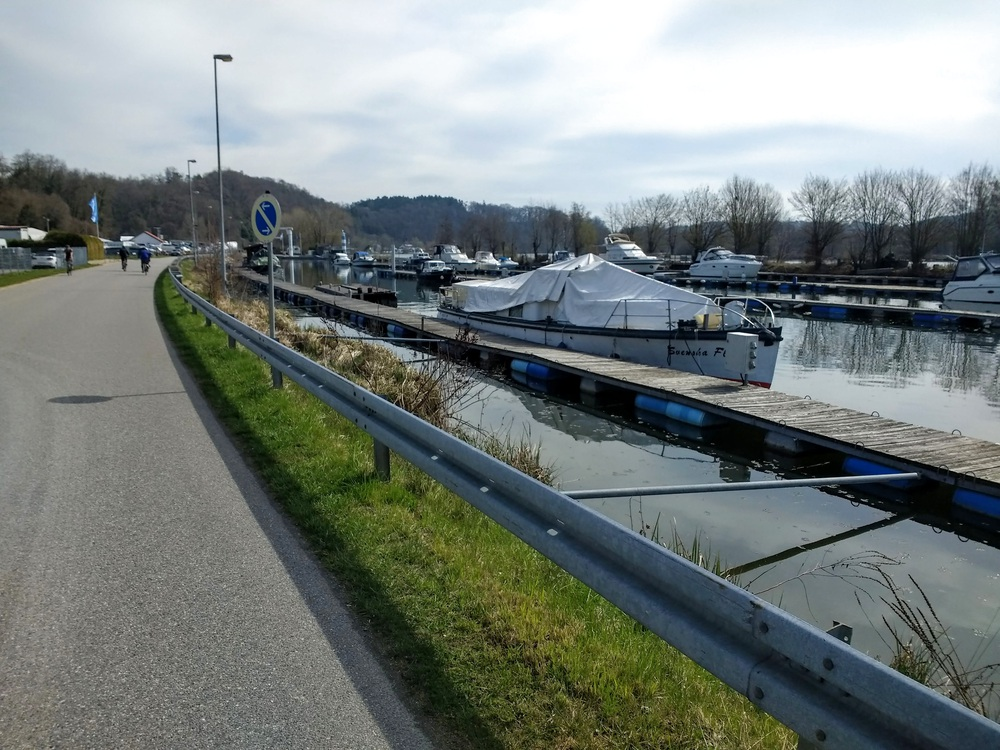
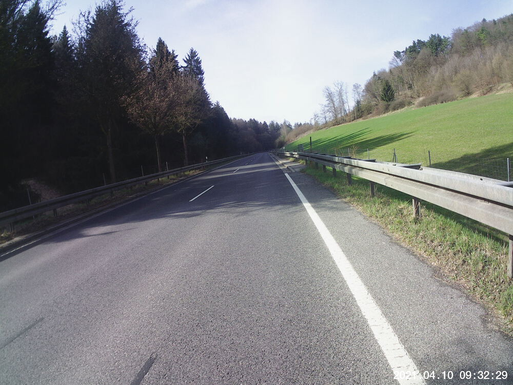
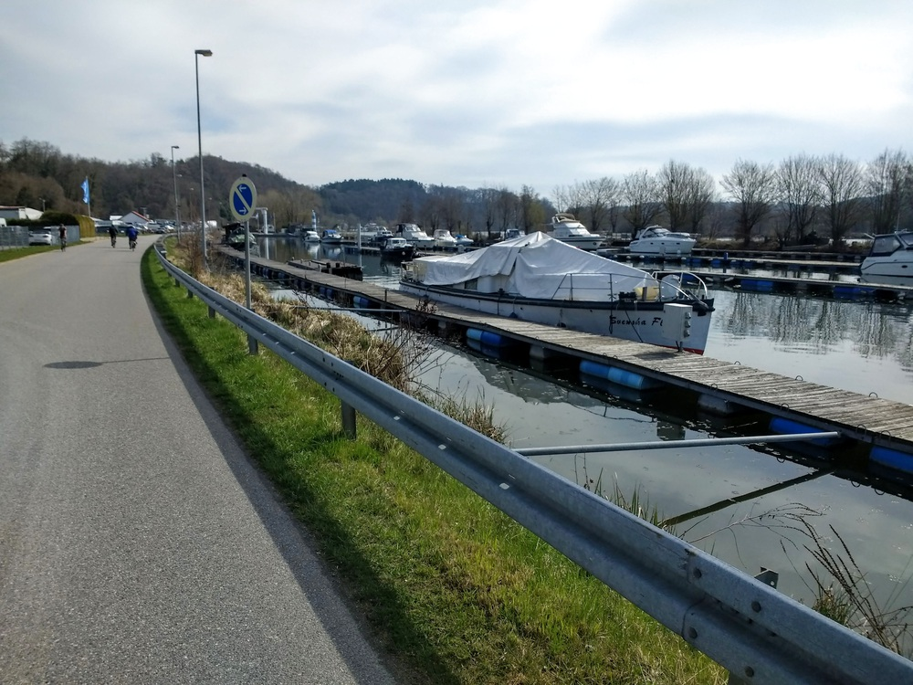

Apr 11, 2021
W00T! First time venturing this far west on the ol' Drahtesel. Whether that’s kosher at the moment is another story. I neglected to think about that while planning this route. I am looking forward to taking little trips on the train and then biking back home. That should open up places like Parsberg and Beratzhausen and Landshut and Straubing. But it requires good behavior on the part of all my fellow residents, such that the pandemic restrictions can ease up, and … Schaumermal.
Some observations on this route:
It was almost ALL on the road. Drivers were considerate, and it never felt particularly unsafe. But there were almost no stretches of bike path along this route.
Several teams of bikers were out there enjoying the weather. One group of about 6 appeared to be collectively repairing a puncture on the bridge into Bad Abbach from Poikam. That can’t have been Covid-19-compliant.
Note that for the bike-mounted images and video I got the date wrong, but the time is accurate.


You might need to tap or click the map to make it bigger. The red solid route was my intention. The blue dashed route is my actual route. I deviated from the planned route on purpose on the way back to head back via Seedorf and Scharmassing, trying to avoid the hills of Großberg and Pentling. In the end, Hohengebraching and Neudorf and Scharmassing presented their own hills, so I don’t know if it was worth it.

Total Distance: 55.4 km
Time: 3:24
Calories: 2839
Calories from fat: 11 %
Average Heart Rate: 147
Maximum Heart Rate: 166
Fat Burn: 0:04
Fitness: 3:20